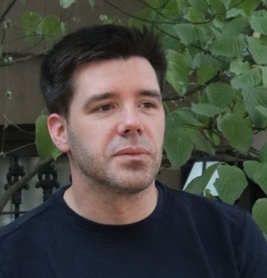

The 2nd International Workshop on Nakba Narratives as Language Resources
Part of the LREC-2026 Workshop
Palma de Mallorca, Spain (Hybrid Workshop)
11 May, 2026
The narratives of the (ongoing) Palestinian Nakba possess significant historical, cultural, literary, and academic value. Preserving this content and empowering it with AI tools is crucial for ensuring its accessibility and usability for present and future generations. Nakba narratives and testimonies exist in diverse formats such as manuscripts, books, audio recordings, novels, and films. Converting this content into a machine-understandable format presents a notable challenge. Establishing accessible archives and well-annotated collections is essential for researchers and historians to verify and share meaningful information.
This workshop aims to explore how artificial intelligence, natural language processing, and corpus linguistics can assist in understanding, disseminating and preserving, Nakba narratives and testimonies. The goal is to create accessible, comprehensive, and well-annotated collections that empower researchers and historians to validate and share critical insights derived from these data. The workshop targets datasets and narratives in Arabic, English, and other languages, however, submitted articles should be written in English.
Previous Workshops:
NakbaNLP-2025 (Webpage, Accepted Papers, Video Recordings)
Participants are encouraged to draw on existing archives such as the Institute for Palestine Studies, the The Palestinian Museum, Nakba-Archive, POHA, Al-Haq, ICHR, as well as open resources like Wikipedia and Wikidata.
All submitted papers must clearly state and explain their relevance to the topic of ‘Nakba Narratives as Language Resources’. The organisers reserve the right to reject any papers that incite hatred, refute established facts, or undermine the suffering of individuals.
We follow the LREC 2026 standards for submission format and guidelines, submissions may be of two types:
Submission URL: Please submit here.

This keynote presents Tech for Palestine as a global, community-driven initiative that mobilizes technologists to build impactful digital resources for Palestine. It highlights not only the development of applications and rapid-response tools, but also the creation and curation of open datasets to document and archive the ongoing Nakba, enabling richer, evidence-based narratives. The talk further explores how data infrastructures, AI methods, and collaborative platforms can preserve collective memory, support research, and amplify Palestinian stories for future generations.
Mediator: Prof. Khalil Sima’an
Panelists:
| 14:00 - 14:05 | Opening Session: Welcome by Workshop Chairs
Chairs: Mustafa Jarrar |
| 14:05 - 14:45 | Keynote: The Tech for Palestine Initiative Paul Biggar |
| 14:45 - 15:25 | Session 1: Nakba Narratives and Resources Chair: Serin Atiani
|
| 15:25 - 16:00 | Session 2: Nakba Information Extraction and AI Modeling Chair: Mo El-Haj
|
| 16:00 - 16:30 | Break |
| 16:30 - 17:00 | Session 3: Shared Tasks Papers. Chair: Shadi Abudalfa
|
| 17:00 - 17:50 | Panel Discussion: NLP: Reconstructing narratives about the ongoing Nakba.
Panel Chair: Khalil Sima’an Panelists:
|
| 17:50 - 18:00 | Closing |